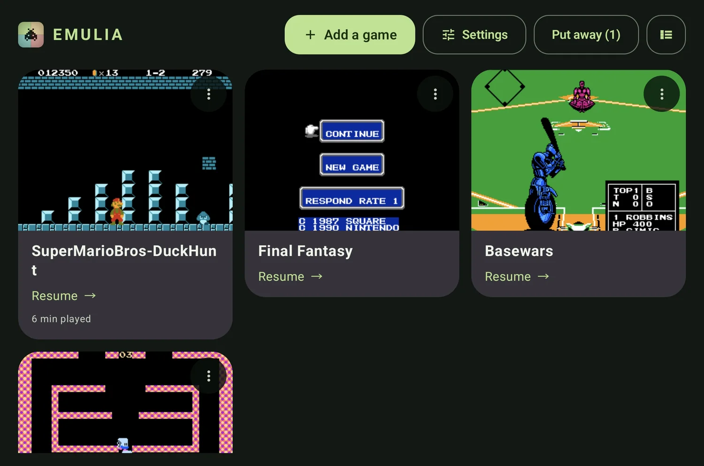
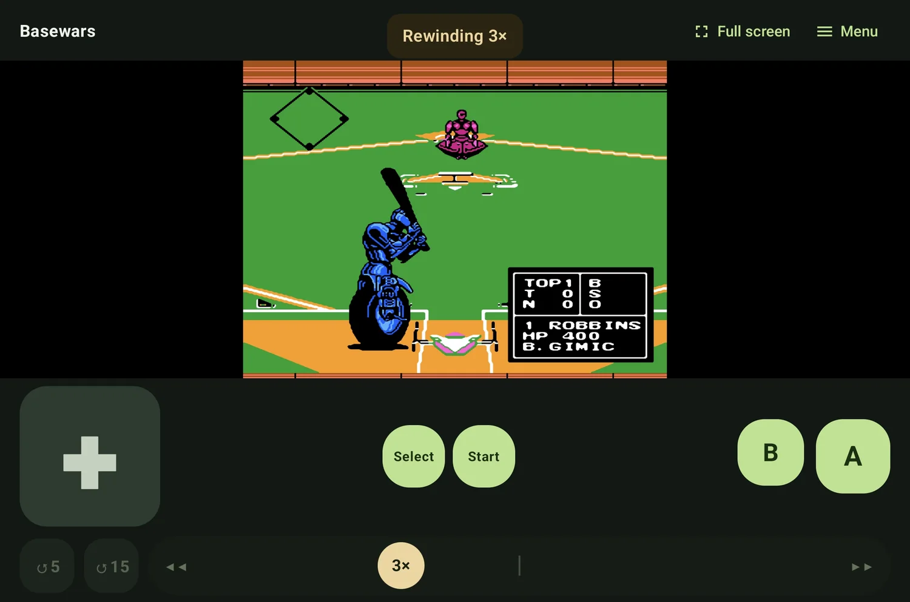
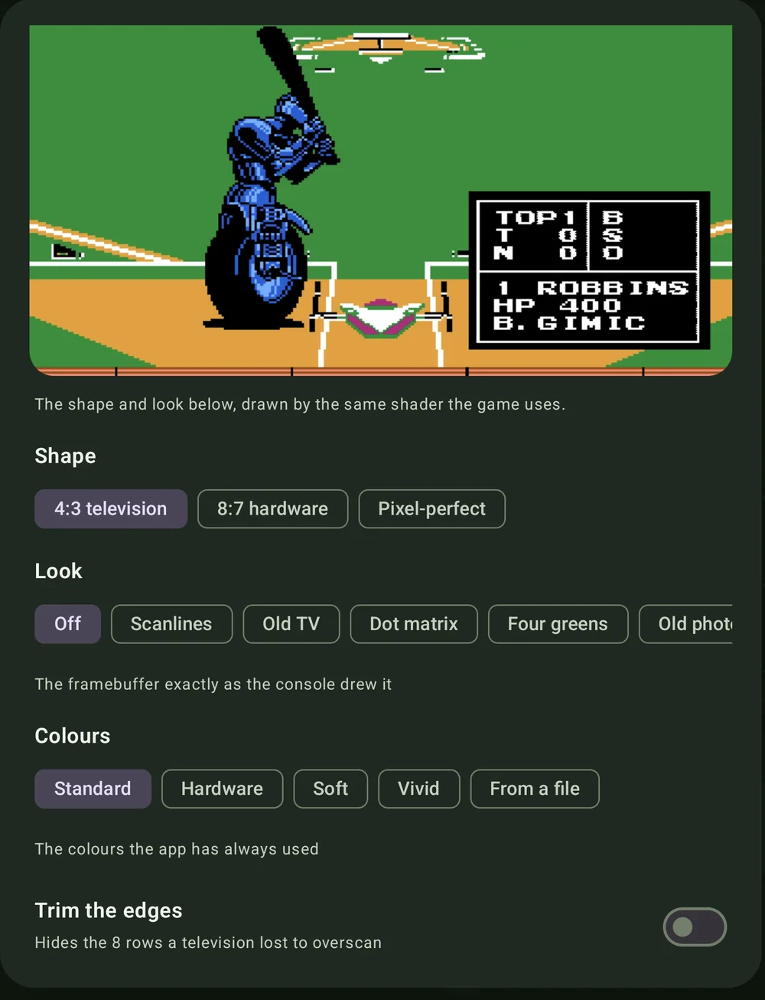

Your games.
Your tablet.
Nothing else.
Emulia plays the 8-bit cartridge files you already own. It brings no games with it, and it has no way to go and find any.
Free, with every feature included. Android 10 and up.

It opens where you left off.
Emulia opens on a shelf, not a file browser. Every game you have added sits there showing the screen you last saw, ordered by what you played most recently. One tap resumes it — the app saved your place when you put the tablet down.
- Pick the box art you want for each game, or let the last screen stand in
- Playtime counted per game, so you can see where the afternoon went
- Put a game away without deleting it, and bring it back later
- Screenshots go to your device gallery, where you would look for them
The app has both. So does this — try the switch.
Hold Undo and the game runs backwards.
One control handles both directions. Drag it away from the centre and time moves — further out is faster — or tap to jump back five seconds, or fifteen. The shoulder buttons on a controller drive the same thing without looking.
- Ten save slots per game, each with a thumbnail and a timestamp
- Saves itself when you pause, switch away, or the battery gets low
- Battery saves kept per game, exactly as the cartridge would have
- Two controller ports over USB or Bluetooth, plus on-screen controls you can hide

The shape and the look are yours.
Three shapes: the 4:3 a television showed, the 8:7 the hardware actually
produced, or pixel-perfect. Ten looks on top of that, from plain scanlines
through an old photograph to a cel-shaded cartoon. Colours are a separate
choice again, and you can load a .pal file of your
own.
Settings previews all of it with the same shader the game uses, so what you see while choosing is what you get while playing.

The permission list is empty.
Not “we don’t collect much”. Emulia’s manifest asks Android for no permissions at all — including the one an app needs before it can open a network connection. Android enforces that, rather than this page promising it, and you can check it yourself in the permission list on the Play page or in your device settings.
<manifest package="com.bsteinfeld.emulia">
<uses-feature android:glEsVersion="0x00030000" />
<uses-feature android:name="android.hardware.usb.host"
android:required="false" />
<!-- and no uses-permission line, anywhere -->
</manifest>Adding a game goes through Android's own file picker, which hands over the one file you chose and nothing else. A wired controller uses the USB feature above, for controller input only. Nothing you do in Emulia leaves the device, because there is nowhere for it to go.
- No ads, and no place a future ad could load from
- No account, no sign-in, nothing to create
- No analytics, no crash reporting, no telemetry
- No paid tier — every feature described here is in the free app
- No games included, and no way to download any
Read the privacy policy — it is short, because there is very little to say.
Written from nothing, and checked against the hardware.
The emulator is Rust, written from scratch rather than wrapped around someone else's. Every CPU instruction with cycle-accurate memory access, all five sound channels through the console's nonlinear mixer, and NTSC, PAL or Dendy timing picked up from the file itself.
- Accuracy
- Passes the real
nestestCPU trace and a 39-ROM CPU, APU, PPU and MMC3 regression set on every build. - Sound
- 48 kHz through AAudio's low-latency path, with a queue that adapts and a rate that tracks your screen. Around 12–14 ms, shown in Settings.
- Cartridges
- iNES and NES 2.0 files, mappers 0, 1, 2, 3, 4, 7, 9, 10, 11, 66, 69 and 71, with battery-backed saves and repair for headers that lie.
- Built and signed by CI
- Every release is compiled, tested, signed and published by a machine, from a tagged commit.
Emulia is young, and honest about it: performance and latency on real hardware have not been measured yet, and some of the rarer cartridge boards have been unit-tested but not yet run against a commercial game.
Bring your own cartridges.
Emulia is free and complete — there is no upgrade to buy, and nothing held back. It arrives on Google Play shortly.